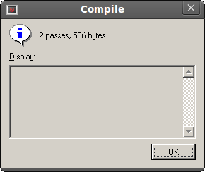

Lesson 2
For the DexBasic for the raspberry pi
This tutorial is going to be about setting up and using the mini
Uart on your Raspberry Pi, to a pc/laptop or any other device that
communicates through uart. Because most pc's today do not have a serial
port the easiest option is to use a USB with a "FTDI FT232RL USB to
serial IC", so you will need one of those if you want to follow along
with this tutorial. The one i use is this one:
FTDI Basic Breakout - 3.3v
It looks like this:
You will also require a Mini-B usb cable for this board, there is
a board made by the same Co that has a built in cable, but i already had
a Mini-B usb cable so i got this board. Which ever board you get make
sure its the 3.3v ver.
To connect the board to your raspberry pi you will also need three jumper wires about 150mm long, with a female header on one end and a male header on the other end like this:
I have used three different colors to make it easy for you to see
where they connect too.
These are the pin's to connect it to on your raspberry pi
Here's a diagram to make it more clear
We then connect it to the FTDI board like this:
The black wire goes to the GND pin (pin number 6) on the PI and the GND on the FTDI board.
The yellow wire is connected to the TX (pin number 8) on the PI and RX1 on the FTDI board.
The green wire is connected to the RX (pin number 10) on the PI and TX0 on the FTDI board.
Like this:
Now we have the wiring done, we need to setup the program we are going to use to talk to the PI, the first thing to note is that if you are using linux (on the laptop/pc not the PI) It has a built in FTDI driver, so theres no need to install one, if your using windows you will need to install a driver for your ver of windows the drivers are available here: FTDI drivers
Just download the driver for your ver of windows and follow the install program instructions.
Note: On windows7 it may find the FTDI driver automatically
Once installed you will need to use a program like PuTTY
In my tests i was able to connect putty, setting the baud rate to 115200 and turning off
flow control (and leaving all the other settings at default). In my
case, the Serial port attached itself to the Windows “COM3″, so I told
putty to connect to that.
If your using linux you will need to install minicom.
From a terminal do this:
sudo apt-get install minicom
Then start the software:
minicom -b 115200 -o -D /dev/ttyUSB0
The setting need to be as follows:
• Speed: 115200
• Bits: 8
• Parity: None
• Stop Bits: 1
• Flow Control: None
Once set you will need to save these setting, so please search for a
tutorial for the PuTTY or minicon on the net, on how to do that.
Now we have everything setup lets take a look at the DexBasic uart
code, as before go to the Tut folder in this case "Tut2", open up
"FASMWARM.EXE" and then load the app.asm code, you should see this:
Now lets take a closer look, first we have the comments, we know what these are for, they are just comments about what the program does and maybe who wrote it, because each line starts with a ; they are ignored by the compiler (assembler really ;)).
Next we have this line:
As before this is in all our programs "This needs to be the first thing after any comments and is needed in
every "DexBasic" app you write, it set's stuff up and is where our macros
are stored."
Then we come to some new code which you have not seen before
This sets the baud rate or bits per second, thats
what data is transferd down Serial at. By internet speeds this is slow,
but it is plenty fast enough for Serial.
The next bit of code is just a label we will use later on in the code to jump back too.
Next we have this code:
This is the same as the print we have used before, but instead of
printing to screen, it sends it down the Serial to be displayed by the
program on the other end of the Serial.
You may also notice the "ln" on the end of the serial.print, this moves
to the next line, if you do not want to move to the next line and want
to print on the same line you would just use:
serial.print
The next bit of code:
Just delay for a time before running the next bit of code.
Which is this:
Which just jumps back to the LetsLoop label to run the code after it again.
And this:
We have already seen what these do and are in every DexBasic App.
As in the last tut go to run then compile and you should see this:

Then click on File label, then open and open the kernel.asm file.
Then go to Run, then compile and once you see the above box, go to the
Tut2 folder and copy the kernel.img file to the SD card (replacing the
kernel.img thats on the SD, with the new one we have just made).
Note: you should of read the intro and Tut1 before this tutorial.
When you run Tut2 you should see something like this:
And that's all folks for Tut 2